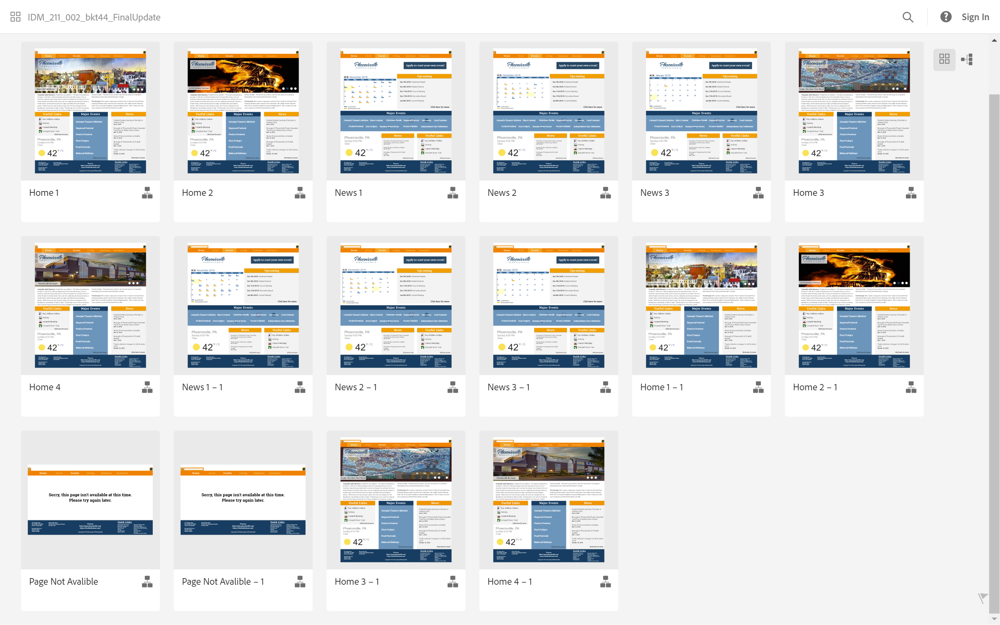

FFXIV Zodiac
Find out what your Final Fantasy XIV Job is based on your birthday! You can either choose to explore each of the jobs by pressing one of the 12 icons that is provided OR enter your birthdate at the top of your screen and see what you get!
Pup-il
- Logo Design: Fiona Tran
- Web Development: Britney Tu
- Glasses Design: Alex Weber
- Research: Arette Tran
Yale School of Art

This was for a project for a class called User Interface Design II. For the project, we are to choose a website to redesign for the purpose of responsive web. I decided to redesign Yale’s School of Art website since it didn’t have this support. Responsive web design is about designing a website to look good on all different sizes (in this case mobile phones, tablets, and desktop computers). The following showcases a video going through each of the platforms of the redesign. Below that is some of the process I went through to create the final product.
Mobile
Tablet
Desktop
Phoenixville Borough
A prototype of a possible redesign for the website for Borough of Phoenixville from late 2018. I focused more on information layout and using contrasting colors that also represents what the town stands for.